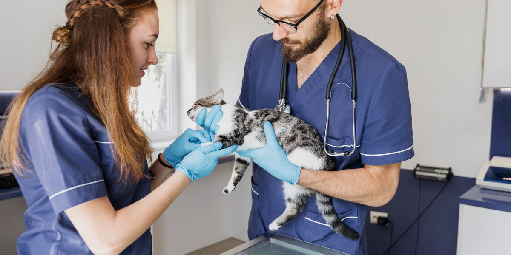

- 
Nos esforzamos por ser reconocidos como el principal establecimiento de veterinaria en nuestra región, líder en el cuidado de la salud animal y en la promoción de un vínculo fuerte y significativo entre las mascotas y sus dueños. Nuestro objetivo es establecer un estándar de excelencia en la industria veterinaria, brindando servicios compasivos, innovadores y de calidad que mejoren la vida de las mascotas y fortalezcan la relación humana-animal en nuestra comunidad.
Compromiso: Nos comprometemos a promover la atención veterinaria de buena calidad y a establecer relaciones duraderas con nuestros clientes y sus mascotas.
Bienestar animal: Nos preocupamos por el bienestar físico y emocional de las mascotas, promoviendo prácticas de cuidado responsables y éticas.
Profesionalismo: Trabajamos con profesionalismo, habilidades técnicas avanzadas y en constante actualización para ofrecer un servicio de calidad y confiable.
Nuestra misión es brindar atención veterinaria integral y de calidad, enfocada en el cuidado, la prevención y el tratamiento de enfermedades en las mascotas. Nos comprometemos a ofrecer servicios personalizados, educación y asesoramiento a los dueños de mascotas, y a trabajar en estrecha colaboración con ellos para asegurar la salud y felicidad de sus compañeros animales.

Consultas veterinarias: Las consultas veterinarias son esenciales para evaluar la salud general de las mascotas y detectar cualquier problema médico. Durante una consulta.
Vacunaciones: La administración de vacunas es crucial para prevenir enfermedades comunes en las mascotas y proteger su salud.
Cirugía veterinaria: La cirugía veterinaria abarca una amplia gama de procedimientos, desde esterilización/castración hasta cirugías más complejas para tratar condiciones médicas.